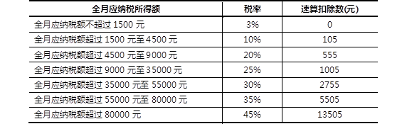

- int a, b, c;
- a = b = c = 100;
- System.out.println("a="+a+",b="+b+",c="+c);
- System.out.println(5+6+""+5+6);
用户从控制台接收两个整数，通过程序找出两个数中的最大值。控制台的交互效果如图-1所示。
图- 1
使用程序为用户所录入的 3 个数值进行升序排列，并将排序后的结果输出到控制台。程序交互过程如图－3所示：
图- 3
本案例需要使用交互的方式判断某年是否为闰年：用户从控制台输入需要判断的年份值，由程序使用if-else判断该年是否为闰年，并将判断结果输出到控制台。程序交互过程如图－4所示：
图- 4
个人所得税是国家对本国公民、居住在本国境内的个人的所得和境外个人来源于本国的所得征收的一种所得税。目前，北京地区的个人所得税的计算公式为：应纳税额＝（工资薪金所得－扣除数）×适用税率－速算扣除数。其中，扣除数为3500元，适用税率以及速算扣除数如下表所示。
表－1 个人所得税缴纳标准
上表中的全月应纳税所得额=工资薪金所得－扣除数。
本案例要求计算个人所得税的缴纳额度：用户从控制台输入税前工资的金额，程序计算所需要交纳的个人所得税的金额，并将计算结果输出到控制台。
程序的交互过程如图-5所示：
图- 5
一年有 12 个月，而每个月的天数是不一样的。其中，有7个月为 31 天，称为大月，分别为1、3、5、7、8、10、12月；有 4个月为 30 天，称为小月，分别为4、6、9、11月；还有二月比较特殊，平年的二月只有28天，而闰年的二月有 29 天。
本案例需要使用交互的方式计算某年某月的天数：由用户在控制台输入年份和月份值，程序计算该年该月的天数，并将结果输出在控制台。程序交互情况如图－7所示：
图- 7
用户从控制台接收三个整数，通过程序找出三个数中的最大值。控制台的交互效果如图-2所示。
图- 2